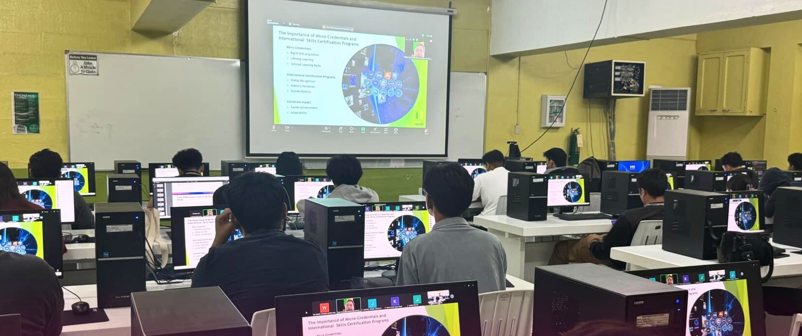
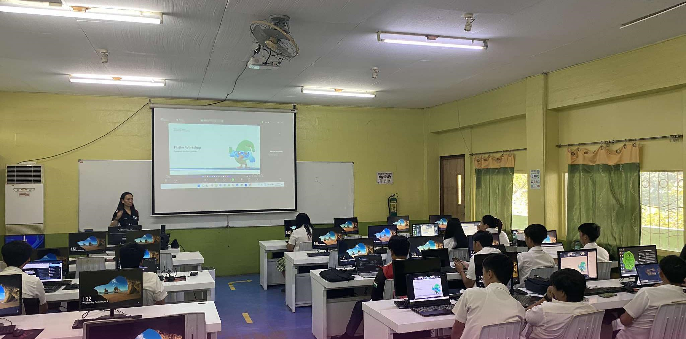
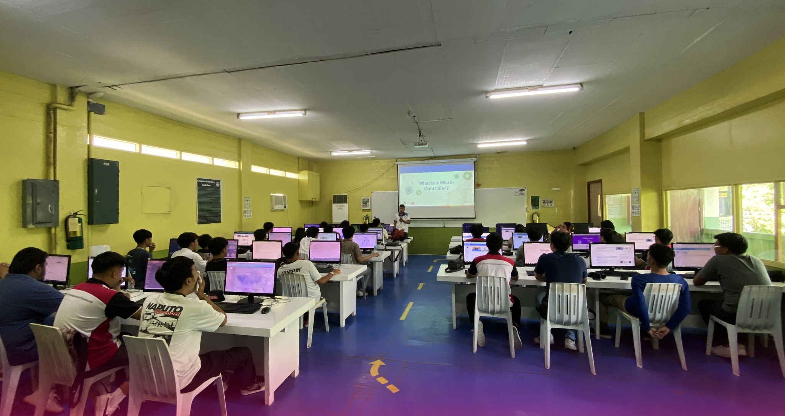

Data Integration
Entry level
- Business Data Specialist
Mid level
- Systems Analyst
- Network Analyst
- Data Analyst
- Compliance Analyst
Certifications: Business Intelligence Analytics
High level
- Project Manager
- Data Architect
School of Information & Technology
Take the first step toward a future in Information Technology. The BSIT program introduces students to coding, networking, and other areas of technology through a curriculum supported by experienced faculty.
Enroll NowThe Program
The program includes the study of hardware and software technologies involving the planning, installation, customization, operation, management, administration, and maintenance of information technology infrastructure. It prepares graduates to address user needs through the selection, development, application, integration, and management of computing technologies within an organization.
Source: CHED Memorandum Order No. 25, Series of 2015
Explore your options
An IT degree can lead to opportunities across several areas. Students can build their skills and choose a direction as they progress.
Certifications: Business Intelligence Analytics
Certifications: CompTIA+, Network Associate, Internet Security Acceleration
Certifications: Application Developer, Solution Developer
Meet the team
Top-tier facilities, driven by unmatched expertise.

Dean

Department Adviser

JPCS Adviser

JPCS Adviser

Department Adviser


